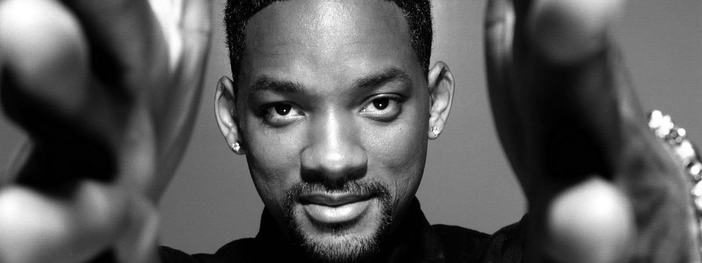
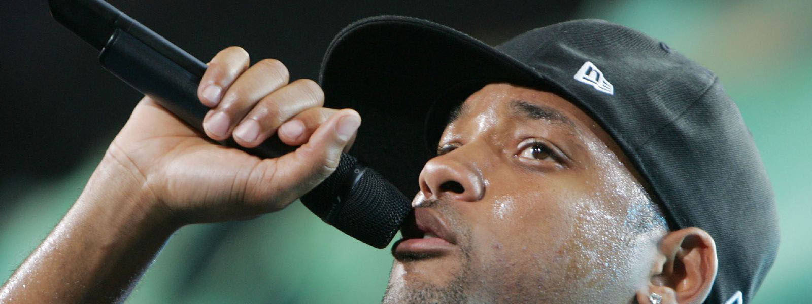
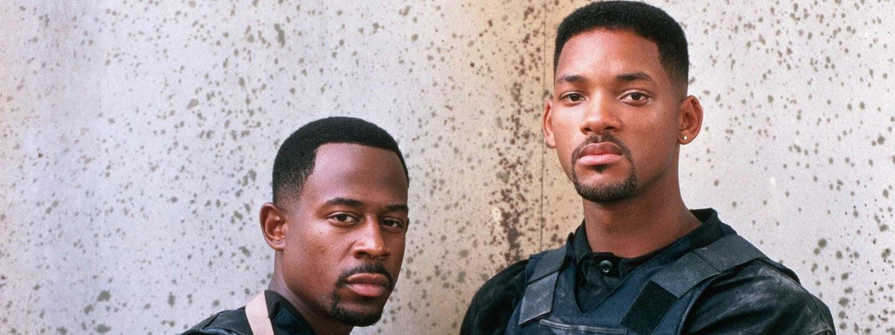
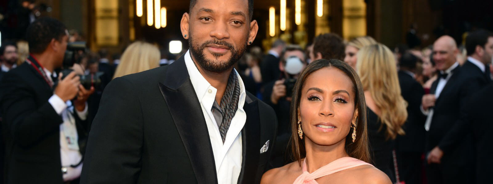
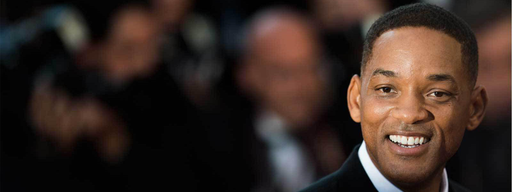

Биография Уилла Смита
 Детство и ранняя юность
Детство и ранняя юность
Уиллард Кристофер стал вторым ребенком в многодетной семье, в которой всего появилось четверо детей. Его отец, бывший военный и мелкий предприниматель, был человеком строгих нравов и, несмотря на охлаждение отношений с супругой, к воспитанию детей подходил ответственно.
Однажды он решил переделать фронтальную стену своего магазина по продаже холодильников: 5 метров в высоту, 12 в длину. Он поручил это задание Уиллу и его младшему брату: парни построили новую стену за лето. Сторонник военной муштровки, он часто порол сыновей. Суровость отца не угнетала Смита-младшего: в детстве будущая звезда получила кличку «Принц» за умение выбираться из любых неприятностей с помощью хорошо подвешенного языка и обаяния. Так что все уроки родителя пошли Уиллу на пользу, не сломив его дух: «Я верю в телесные наказания. Мой отец воспитал во мне солдата. И теперь я готов ко всему, что может предложить мне жизнь. К тому же благодаря отцу я в детстве так и не стал употреблять наркотики. Потому что я знал, что он просто убьет меня. Буквально». Своих детей Уилл Смит также приучает к дисциплине и строгости.
Рэпом Уилл Смит также увлекся в детстве. В своем дневнике Уилл записывал первые речитативы с обилием браных слов. Бабушка Смита, обнаружив записки, на последней странице оставила внуку такой комментарий: «Дорогой Уиллард, по-настоящему интеллигентные люди не используют слова такого типа, чтобы выразить свои чувства и мысли». И это замечание Уилл воспринял всерьез — под влиянием отца Смит вообще привык считаться с мнением старших. С тех пор Уилл Смит полностью очистил свою речь от нецензурной ругани, а при необходимости прибегает к более изысканным формам. Вот что сказал актер, комментируя скандал вокруг своего друга Билла Клинтона, когда тот еще был президентом: «У президента нет необходимости отчитываться перед всякими членоголовыми прокурорами за свою сигару…».
 Рэп Уилла Смита
Рэп Уилла Смита
Вместе со своим лучшим другом Джеффом Таусоном Уилл Смит создал группу «Ди-джей Джаззи Джеф и Фрэш-Принц». Все тексты для дуэта писал Уилл, и ни в одной композиции не было нецензурных выражений, поэтому записи «DJ Jazzy Jeff & the Fresh Prince» можно было покупать подросткам без разрешения родителей, что помогло сделать проект коммерчески успешным. С другой стороны, исполнители агрессивного гангста-рэпа подсмеивались над парнями, которые, по их мнению, делали «сопливый рэп для девчонок».
Тем не менее, дуэт стремительно набирал популярность. К примеру, сингл под названием «Parents Just Don't Understand» («Родители просто не понимают») мгновенно стал настоящим хитом, а два альбома молодых рэперов быстро стали платиновыми. В 1988 году Уилл Смит и его друг стали первыми рэперами, удостоенными престижной премии «Грэмми». .
В 21 год уже фантастически знаменитый Уилл Смит внезапно осознал, что все заработанные миллионы куда-то испарились, более того, к тому моменту он заработал долгов на миллион, и кредиторы уже требовали платы.Как назло, популярность коллектива как раз начала снижаться – на американской сцене юмористического хип-хопа появились новые игроки. Главными конкурентами Уилла и Джеффа были ребята из De La Soul, а после них подобные группы начали рождаться как грибы после дождя
Кинокарьера Уилла Смита
Кинокарьера Уилла Смита
И тут Уилл Смит нашел спасательный круг в виде предложения от компании NBC. Молодого человека пригласили сыграть самого себя, крутого парня из Западной Филадельфии, который попал в район голливудских знаменитостей Беверли-Хиллз в телевизионном сериале «Принц из Беверли-Хиллс».
Сериал шел по американскому телевидению шесть долгих лет, и его успех позволил актеру рассчитаться с долгами и попасть в профессиональные голливудские круги. Воодушевившись триумфом, Уилл решил перейти с телевидения на широкий экран. В большом кино Смит дебютировал в 1992 году, в картине «День в Городе Ангелов», сыграв бездомного Манни. В следующем году актер успешно воплотил на экране образ бесшабашного парня в фильме «Сделано в Америке». А его появление в роли обаятельного мошенника Пола в картине «6 степеней отчуждения» и вовсе произвело фурор среди зрителей и критиков.
Народная любовь зрителей пришла к Уиллу Смиту после выхода на экраны боевика «Плохие парни» (1995 год). Здесь актер появился в образе полицейского вместе с Мартином Лоуренсом. Контраст их образа жизни (Уилл Смит играл развязного плейбоя, тогда как Лоуренс – примерного семьянина) и запоминающийся юмор принесли фильму высокие оценки критиков.
 Расцвет актерской карьеры. День Независимости и другие роли
Расцвет актерской карьеры. День Независимости и другие роли
Середина 90-ых ознаменовалась для Уилла Смита очередным скачком популярности. В 1996 году он предстал перед зрителями фантастического блокбастера «День независимости» в роли отважного летчика Стивена Хиллера.
В 1997 году актер предстал перед зрителями в амплуа, которое сохранилось за ним на протяжении всей его дальнейшей карьеры. Приключения обаятельного агента J из комедийного боевика «Люди в черном» полюбились миллионам людей по всем миру, а Уилл Смит и Томми Ли Джонс вошли в число самых лучших актерских дуэтов 90-ых. История о секретном агентстве, своеобразной иммиграционной службе для инопланетян, увеличила размер счета Уилла Смита еще на пять миллионов.
В это время актер вспомнил о позабытой музыкальной карьере и выпустил два альбома подряд: «Willenium» и «Big Willie Style», которые ожидаемо стали удачными.
В этот момент старшее кинопоколение звезд стало гордиться Уиллом. А Вупи Голдберг даже назвала молодого человека «сынулей». Еще одна победа не заставила себя ждать. Актер сыграл вместе с Джином Хэкменом в картине «Враг государства». Правда, следующая работа, ковбой в комедии «Дикий, Дикий Запад» режиссера Барри Зонненфельдом, стала провальной, хотя трек из фильма вновь покорил американские чарты.
Самое обидное, что ради этой картины Уилл Смит отказался от главной роли в «Матрице», и мир навсегда связал Нео с Киану Ривзом.
Вскоре актер снялся в знаковой роли Мохаммеда Али в фильме-биографии «Али». Эта получившая множество восторженных отзывов картина сильно изменила и самого актера. По его словам, он достиг предела своих физических, духовных, эмоциональных возможностей. Уилл Смит подошел к роли крайне серьезно: он изнурял себя 6-часовыми ежедневными тренировками, сидел на боксерской диете, в результате набрал 15 килограммов мышечной массы. Кроме этого, Уилл учил язык и отказался на время от секса, как и его герой.
После выхода картины Смиту даже не стоило беспокоиться о своем будущем. Каждый год актер появлялся в нескольких картинах. Но он все еще играл бестолковых копов и борцов с инопланетянами. Уилл исправно шутил и балагурил в картине «Люди в черном-2» и ленте «Плохие парни-2».
В это время актер решил перейти на драматическое роли, чтобы найти душевное профессиональное равновесие. Ключевая работа Смита – роль волевого и серьезного детектива в боевике «Я, робот!» Алекса Пройаса.
Следующие годы Уилл Смит тщательно выбирал роли, он брался только за значимых персонажей, а не обычных. Так, героями актера стали доктор-сват в мелодраме 2005 года «Правило съема: Метод Хитча», а также героический отец-одиночка в драме 2006 года «В погоне за счастьем», где также снялся сын Уилла Смита, Джейден Смит.
В 2007 году его героем стал единственный выживший в Нью-Йорке человек из фильма «Я - легенда». Следом его портфолио пополнил влюбленный в смертельно больную девушку парень в драме под названием «7 жизней». Ну а далее последовала роль бомжа-супергероя в комедии «Хэнкок» вместе с Аттикусом Шафер и Шарлиз Терон.
После столь внушительной фильмографии Уиллу Смиту нет нужды появляться на больших экранах каждый год. Среди его последних работ – запутанная криминальная драма «Фокус» в тандеме с роскошной Марго Робби, трагичный детективный триллер «Защитник» и комедийный супергеройский фильм «Отряд самоубийц».
В «Отряде самоубийц» Уилл Смит сыграл роль «антисупергероя», наемного убийцы Дедшота. Примечательно, что на эту роль претендовали многие звезды Голливуда: Киану Ривз, Брэд Питт, Леонардо Ди Каприо и даже Джонни Депп, но режиссер Дэвид Эйр остановился все-таки на Смите. Для этой роли актеру пришлось побрить голову и пройти курс обучения стрельбе в военно-полевых условиях.
 Личная жизнь Уилла Смита
Личная жизнь Уилла Смита
Три года Уилл Смит прожил вместе с первой супругой, Шери Зампион. В 1995 году актер развелся. Старший сын Уилла Смита, Уиллард Кристофер Смит III, предпочел жить с мамой.
Второй супругой актера стала его коллега по цеху Джада Пинкетт. С этой красавицей-мулаткой Уилл познакомился во время ее проб на роль партнерши Смита в сериал про Принца из Беверли-Хиллз. Тогда худенькая и хрупкая Джада не подошла огромному двухметровому Уиллу Смиту, и девушка ушла ни с чем. Но это не помешало им подружиться в реальной жизни, и когда первый брак Уилла Смита дал трещину, он вспомнил о забытых чувствах. В браке у пары родился сын Джейден и дочка Уиллоу.
Джада не столь популярная актриса, как ее звездный супруг, но все же может похвастаться внушительной фильмографией. Среди ее последних известных работ: сериал «Готэм» и комедия «Очень плохие мамочки». В семье Смитов царит гармония; Джада спокойно относится к слухам, которые возникают вокруг личной жизни ее мужа после премьеры каждого фильма, в котором фигурирует любовная линия: «Я нормально отношусь к тому, что Уилла привлекают другие женщины. В конце концов, если он не ценит женскую красоту в других, то как же он сможет восторгаться моей внешностью?».
 Уилл Смит сейчас
Уилл Смит сейчас
В последние годы Уилл Смит много занимается исполнительным продюсированием (сериал «Кобра Кай», драма «Жизнь за год», «Каратэ-пацан-2»). В планах у актера – съемки сиквела «Хэнкока», однако статус проекта пока не определен. Также в качестве режиссера Уилл Сми намерен снять библейскую легенду о Каине и Авеле с «вампирским» уклоном.